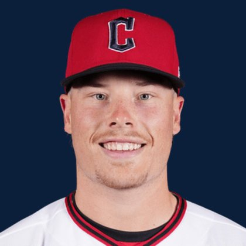

BASEBALLKEEP
Dynasty · Redraft · Diamond
Player File · 2B CLE

Travis Bazzana
#37 · 2B · Cleveland Guardians · age 23 · B/T LR · 5' 11" / 199 lbs · MLB debut 2026 · Hornsby, Australia
Keep avg199.67
# Boards3
BK Value125
Spread82–268
Hitting
| Year | G | AB | R | H | 2B | HR | RBI | SB | BB | SO | AVG | OBP | SLG | OPS |
|---|---|---|---|---|---|---|---|---|---|---|---|---|---|---|
| 2026 | 93 | 344 | 37 | 80 | 16 | 9 | 36 | 17 | 46 | 88 | .233 | .327 | .369 | .696 |
The Keep#219BK 125
The Lineup#145BK 455
Redraft#219BK 125
Baseball Savant
Starcast · spray · pitch
Percentile ranks (Starcast) plus the official Savant spray chart for bats and pitch chart for arms. Open the full Baseball Savant page.
Batter · 2026
xwOBA
22
xBA
13
xSLG
16
xISO
28
xOBP
44
Barrels
21
Barrel %
25
EV
32
Max EV
37
Hard Hit %
30
K %
42
BB %
79
Whiff %
42
Chase %
72
Speed
74
Arm
9
OAA
31
Bat Speed
17
Squared Up
52
Swing Len
18
Hits spray chart
Minus
- Board spread 82–268 (186 ranks).
Every Board
Spread 82–268 · 3 sources
| Source | Rank |
|---|---|
| FantasyPros Dynasty ECR | 82 |
| TDG Points | 249 |
| RotoGraphs Model | 268 |
BK News
On The Keep nearby — Gerrit Cole (#217) · Reid Detmers (#218) · Thomas White (#220) · Jared Jones (#221)
All players · The Keep · BK News · The Lineup · Pitchers · Calculator